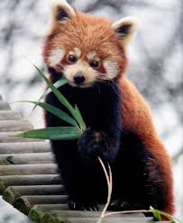

Orochi é um cantor de trap que está ganhando popularidade.
Com suas letras cativantes e estilo único, Orochi tem conquistado uma base de fãs crescente.
Abate Abel faz expulsão de um jogador em uma partida de campeonato.
A expulsão gerou controvérsia entre os fãs e especialistas do esporte, com muitos questionando a decisão do árbitro.

Um panda foi encontrado vivo em uma área rural, gerando comemoração entre os conservacionistas.
O panda, que estava desaparecido há semanas, foi resgatado por uma equipe de conservação e está agora em um santuário para cuidados adicionais.